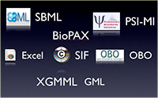
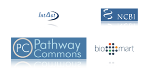
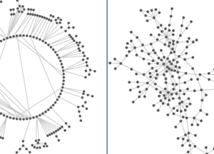
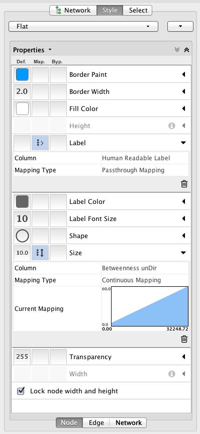
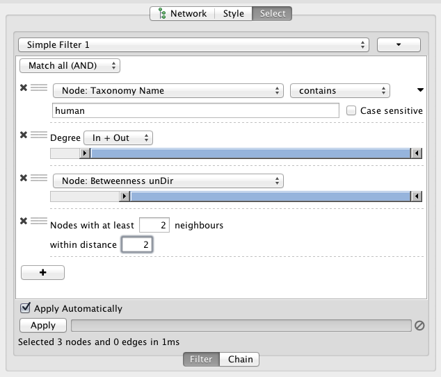
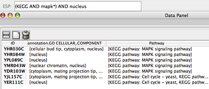
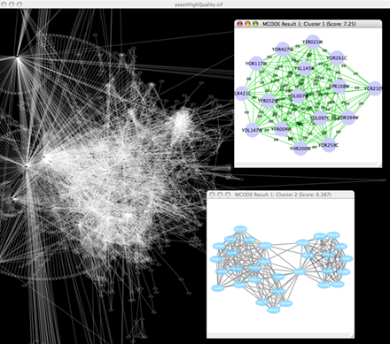
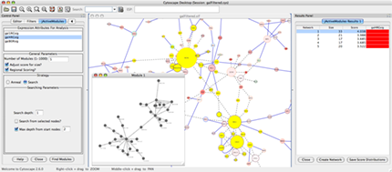
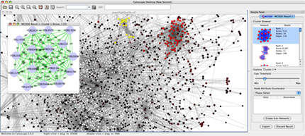
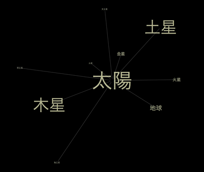

Supports Many Standards

Cytoscape supports a lot of standard network and annotation file formats including: SIF (Simple Interaction Format), GML, XGMML, BioPAX, PSI-MI, GraphML, KGML (KEGG XML), SBML, OBO, and Gene Association. Delimited text files and MS Excel™ Workbook are also supported and you can import data files, such as expression profiles or GO annotations, generated by other applications or spreadsheet programs. Using this feature, you can load and save arbitrary attributes on nodes, edges, and networks. For example, input a set of custom annotation terms for your proteins, create a set of confidence values for your protein-protein interactions.
Public Database Clients

Cytoscape works as a web service client. This means Cytoscape can directly connect to the external public databases and imports network and annotation data. Currently, Pathway Commons, IntAct, BioMart, and NCBI Entrez Gene are supported. And we continue to develop new service clients for popular databases.
Interoperability
Since Cytoscape supports import/export standard file formats, you can easily put Cytoscape into your workflow. For example, if you have a network data generated by igraph or Bioconductor, Cytoscape can load the file as a text table and you can export it in PSI-MI format for other bioinformatics tools or your own applications/scripts.
From version 3.3, Cytoscape supports RESTful API for programmatic access. You can use your choice of programming languages to access Cytoscape core features, such as creating networks, applying layouts, or image export.
Session File
You can save your work by a single click. All of settings, data files, and visualizations are packed in a session file. It is called Cytoscape Session (.cys) file. Cytoscape Session file includes networks, attributes (for node/edge/network), Desktop states (selected/hidden nodes and edges, window sizes), Properties, some plugin states, and Visual Styles.
Layout

Layout networks in two dimensions. A variety of layout algorithms are available, including cyclic, tree, force-directed, edge-weight, and yFiles Organic layouts. You can also use Manual Layout tools similar to other graphics application user interface.
Image Export
You can export networks as publishable-quality images. Supports PDF, PS, SVG, PNG, JPEG, and BMP files. Vector images (PDF and PS) can be modified by other application such as Adobe Illustrator for further enhancements.
VizMapper

Customize network data display using powerful VisualStyles. View a superposition of gene expression ratios and p-values on the network. Expression data can be mapped to node color, label, border thickness, or border color, etc. according to user-configurable colors and visualization schemes.
Filter

Filter the network to select subsets of nodes and/or interactions based on the current data. For instance, users may select nodes involved in a threshold number of interactions, nodes that share a particular GO annotation, or nodes whose gene expression levels change significantly in one or more conditions according to p-values loaded with the gene expression data. You can create new networks from the filtering result.
Search

Search target nodes and edges from Search window. Lucene Syntax is supported for arbitrary complex queries.
Browsing

Zoom in/out and pan for browsing the network. Use the network manager to easily organize multiple networks. And this structure can be saved in a session file. Use the bird's eye view to easily navigate large networks. Easily navigate large networks (100,000+ nodes and edges) by efficient rendering engine.
Find Modules/ Clusters
Find active subnetworks/pathway modules. The network is screened against gene expression data to identify connected sets of interactions, i.e. interaction subnetworks, whose genes show particularly high levels of differential expression. The interactions contained in each subnetwork provide hypotheses for the regulatory and signaling interactions in control of the observed expression changes. Find clusters (highly interconnected regions) in any network loaded into Cytoscape. Depending on the type of network, clusters may mean different things. For instance, clusters in a protein-protein interaction network have been shown to be protein complexes and parts of pathways. Clusters in a protein similarity network represent protein families.


App Manager and App Store
Apps are available for network and molecular profile analysis. Cytoscape is a software written in Java and you can write your own App for data analysis, import, and visualization by writing Java code. More Apps are available at the Cytoscape App Store. You can install most of the Apps by just one click from App Manager, or directly install from the App Store (this is a Cytoscape 3 feature).
Export to Web
Cytoscape 3 can generate a web application using Cytoscape.js from your Cytoscape session. In addtion, you can easily export your networks as JSON files, and share with your collaborators using external web application such as cyNetShare.
Multilingual

You can use your language for the data files. Most of the features in Cytoscape supports languages other than English, including Eastern Asian languages using two-byte characters.